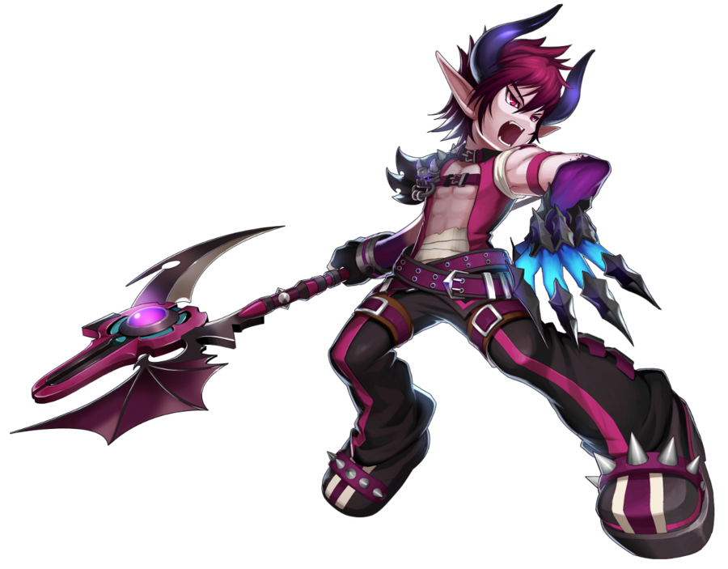
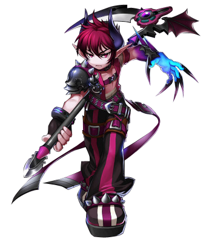
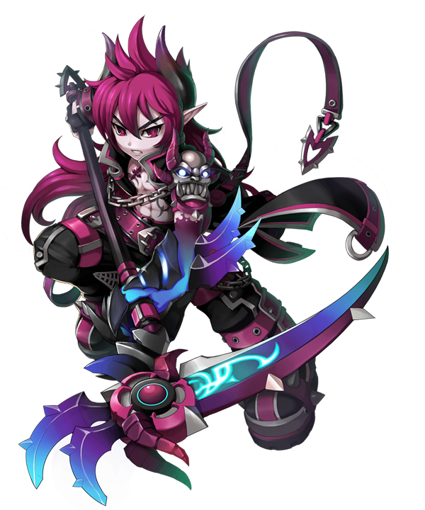
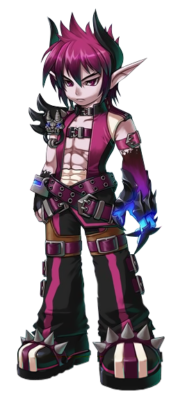
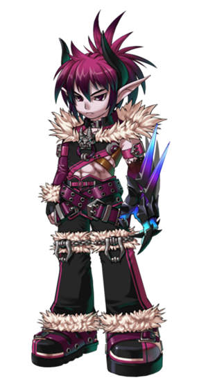
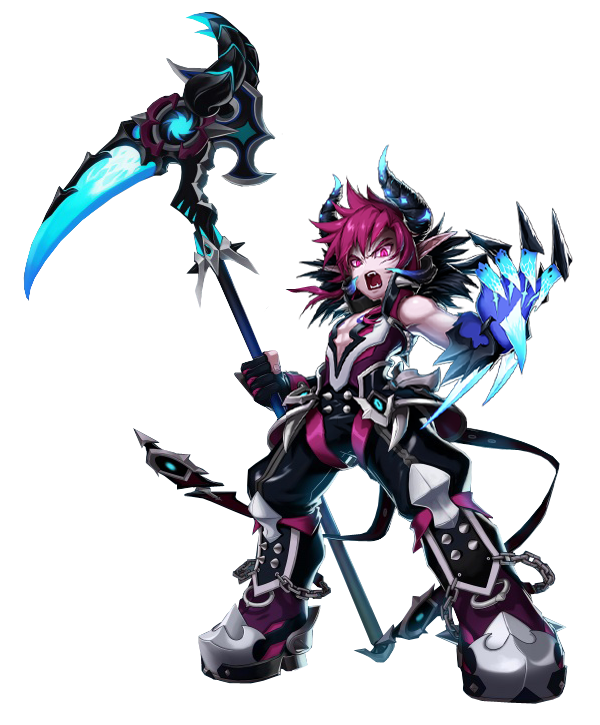
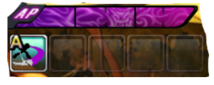

Informações Principais do Personagem
Nome: Dio Burning Canyon
Idade: Sua idade não pode ser calculada com parâmetros humanos. Aparenta ter 18 anos.
Origem: Elyos
Gosta: Brincar com sua Soul Reaver (Foice)
Ponto fraco: Rey


Dio é um habitante da Dimensão Mágica de Elyos, desconhecida por quase todos os humanos,
dominada por criaturas demoníacas e energias arcanas. Membro da raça conhecida como Asmodiana,
seu povo é dividido entre várias Tribos Demoníacas que disputam o poder.
Seu comportamento pode parecer rude e egoísta, ou até mesmo um pouco selvagem para algumas
pessoas, mas deve se levar em conta que é muito difícil compreendê-lo se usados os valores
humanos como base de comparação, já que a moral e os atos da sua raça são bem diferentes.
Séculos atrás, quando sua dimensão ainda era ligada ao mundo de Ernas através de vários portais,
as Tribos Demoníacas invadiram o mundo dos humanos e travaram uma gigantesca batalha contra o
reino de Calnat, o mais tecnologicamente avançado de sua época. Como resultado dessa guerra, que
ficou conhecida como a 1ª Guerra Mágica, os Asmodianos perderam e viram os portais que ligavam
sua dimensão ao mundo dos mortais serem selados, aprisionando-os definitivamente em sua
dimensão.
Dio fazia parte dos clãs que se opuseram ao ataque do seu povo contra Calnat. Ele havia sido
enviado para Ernas para vigiar como a batalha estava se desenrolando e reportar de volta para
sua família. Infelizmente, foi pouco depois de ele ter entrado em Ernas que as Tribos Demoníacas
sofreram sua derrota e os portais para Elyos foram selados, prendendo o jovem Asmodiano no mundo
dos humanos. Ao mesmo tempo em que os portais foram fechados, Dio viu seus poderes também sendo
selados, e assim não teve forças para voltar para sua dimensão, ficando isolado em companhia de
seu mordomo, Alfred, e seu incômodo criado, Sebastian.
Graças ao seu temperamento arrogante e orgulhoso, enquanto estava preso em Ernas, Dio impôs a si
mesmo a nova missão de vigiar os Portais Dimensionais para garantir que eles continuassem
lacrados. Assim ele planejava impedir que uma nova guerra entre os mundos corresse o risco de
acontecer.
Ele tem uma grande rivalidade com Veigas Terr, já que Dio é o núcleo das famílias moderadas e
Veigas é o núcleo da família agressiva.

Classes

Profano
Arma: Deathstar

Drakar
Arma: Deathstar
Leviatã
Arma: Deathstar

Asmodeus
Arma: Deathstar
Habilidade especial
Pontos de Ação
Diferente dos outros personagens, Dio, Zero, Rey, Lupus e Veigas possuem uma função chamada
"Pontos de Ação" ou Action Points (abreviado como PA, ou AP em inglês) que é marcada por
habilidades e alguns ataques comuns; basicamente substituindo o "MP". Utilizando a sua Árvore de
Talentos, Dio é capaz de usar até cinco habilidades quer se trate de habilidades letais ou de
técnicas simples. Diferente daquelas de MP, as técnicas e habilidades de um personagem de AP são
ativadas através de teclas, invés de carregar para usar uma habilidade.
No centro superior da tela, as cinco habilidades se acenderão. Isso significa que elas estão
prontas para serem usadas. A interface de comando com AP usa A, S, D, F e G.
Porém, isso muda o Ataque da Mascote para a tecla LeftShift e o Provocar para a tecla V.
Diferente dos outros personagens, os personagens de AP não ganham energia ao golpear os
inimigos, mas sim esperando. Porém, por ele ser tecnicamente baseado em Mana, ele absorverá os
fluidos das poções, itens e propriedades da armadura.
Se um personagem de AP receber um Contra-ataque, porém, todas as habilidades recebem um máximo
de 10 segundos de carregamento. Isso pode ser reduzido para 9 ou 8 com o "Reduzir Recuperação
Após Contra-Ataque", apesar de nem todos os personagens de AP o possuírem.

Empilhamento de Classes
À medida que qualquer personagem de AP (Dio, Zero, Rey e Lupus) evolui mais e mais, ele fica
mais forte e mais letal. Porém, é impossível voltar para as classes anteriores, já que todas
elas são como uma só. Enquanto os personagens de AP absorvem mais poder, eles são capazes de
usar habilidades das suas classes futuras e ainda usar aquelas das classes anteriores.
De acordo com as informações do Drakar, Dio selou a maior parte dos seus poderes, deste modo ele
eventualmente os recuperaria no futuro. Isso explica como e por que ele pode "empilhar" as suas
classes.